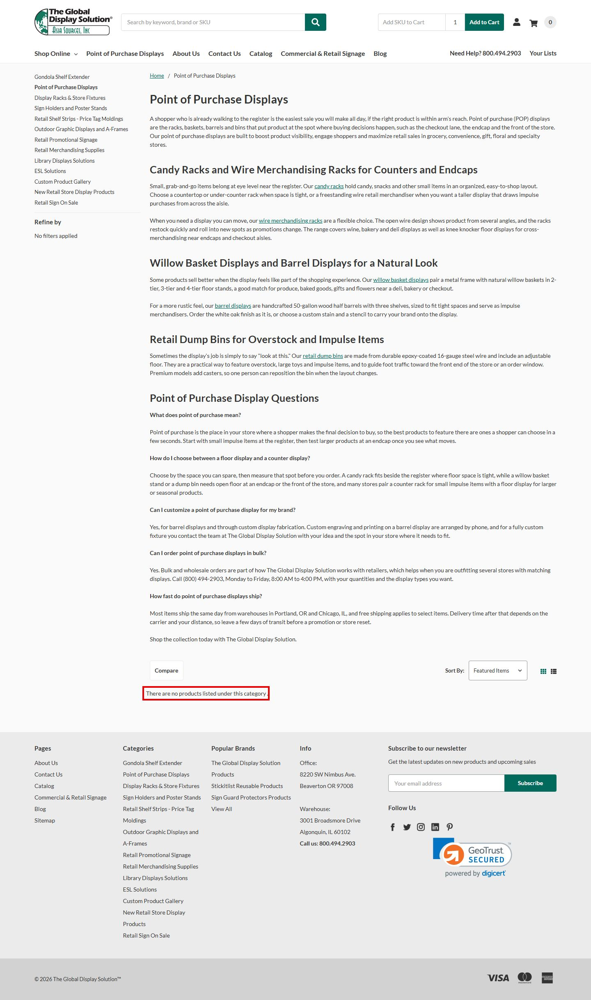
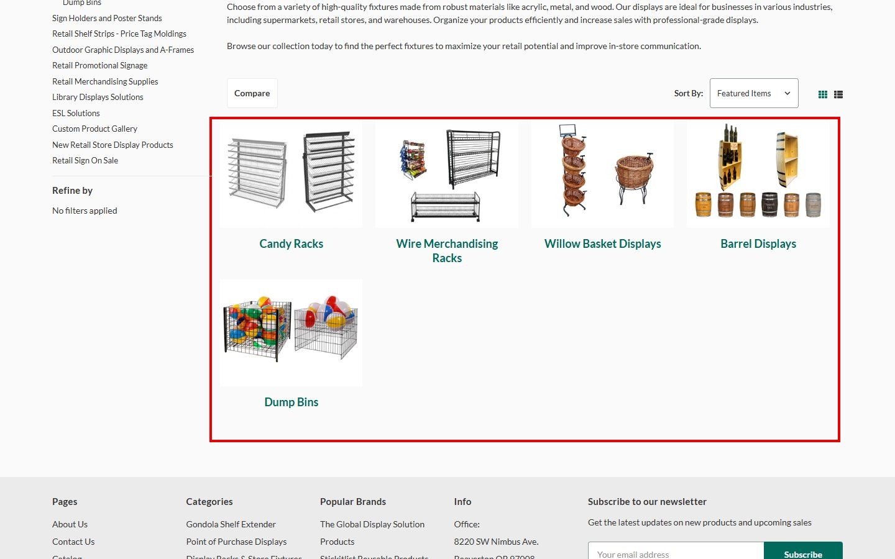
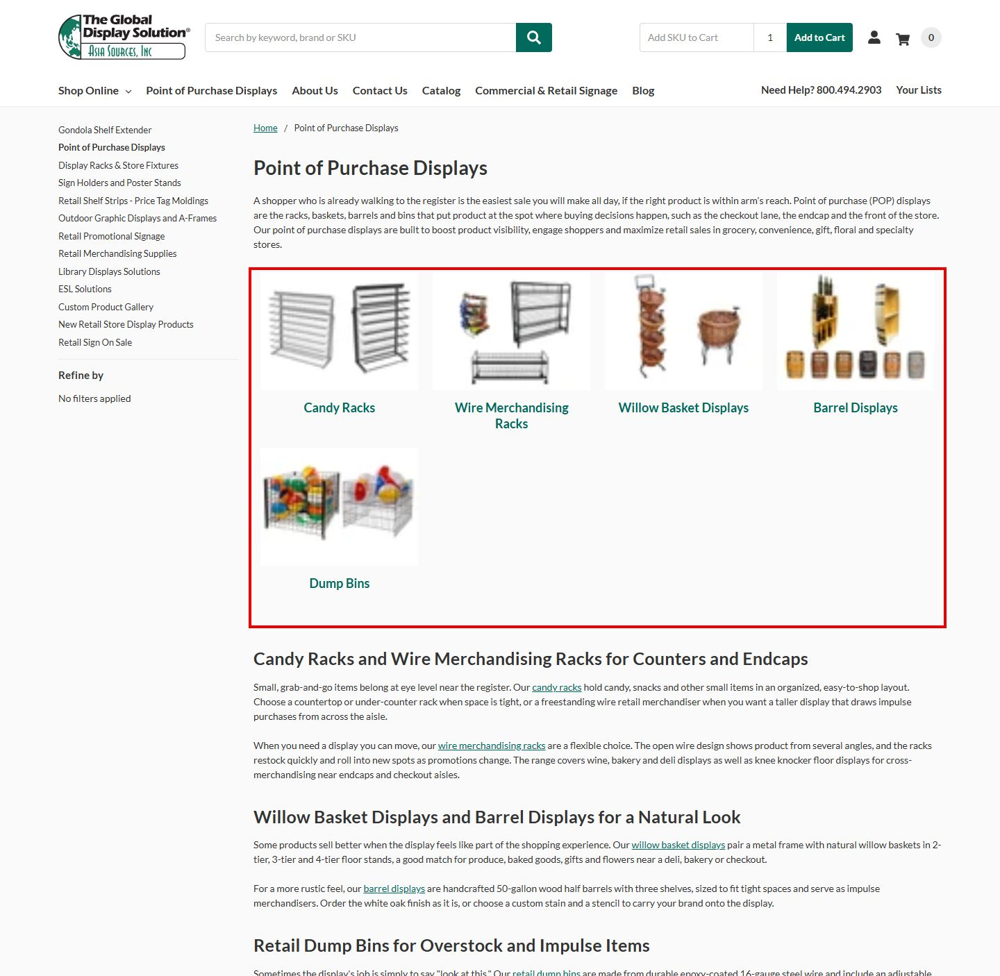
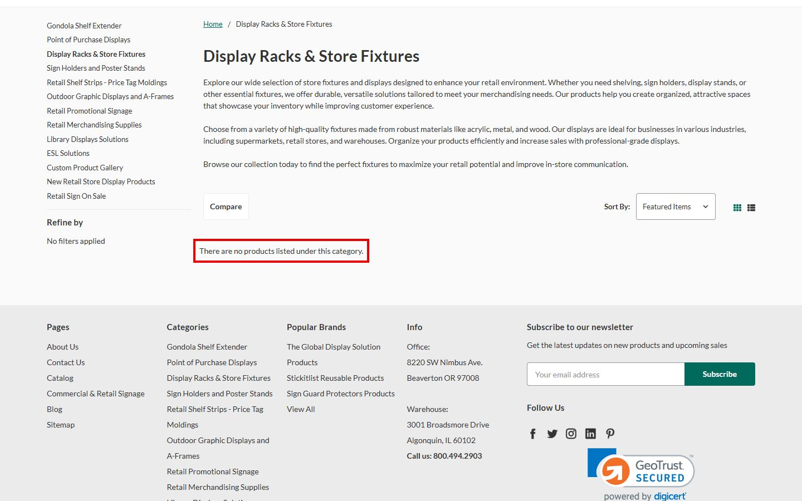

<title>POP Category Options</title>
<meta name="claude:viewport-fit-sides" content="cover">
<link rel="stylesheet" href="https://fonts.googleapis.com/css2?family=Inter:wght@400;600&family=Space+Grotesk:wght@500;700&display=swap">
<style>
/* Layout: single reading column, then side-by-side option cards that stack on phones */
:root {
  --bg: #f6f8f7; --surface: #ffffff; --fg: #1d2523; --muted: #5b6764;
  --brand: #0b6b57; --line: #d9e1de; --good: #1f7a3a; --bad: #b42318;
  --display: "Space Grotesk", system-ui, sans-serif; --body: "Inter", system-ui, sans-serif;
}
@media (prefers-color-scheme: dark) { :root:not([data-theme="light"]) {
  --bg: #121816; --surface: #1a2220; --fg: #e4ebe8; --muted: #9aa8a4;
  --brand: #4fc3a1; --line: #2c3835; --good: #5fcf7f; --bad: #ff7b6e; color-scheme: dark } }
:root[data-theme="dark"] {
  --bg: #121816; --surface: #1a2220; --fg: #e4ebe8; --muted: #9aa8a4;
  --brand: #4fc3a1; --line: #2c3835; --good: #5fcf7f; --bad: #ff7b6e; color-scheme: dark }
body { background: var(--bg); color: var(--fg); font: 15px/1.6 var(--body);
  padding-block: 32px 64px; padding-left: max(16px, env(safe-area-inset-left, 0px)); padding-right: max(16px, env(safe-area-inset-right, 0px)); }
main { max-width: 1100px; margin: 0 auto; display: grid; gap: 40px; }
h1, h2, h3 { font-family: var(--display); line-height: 1.2; text-wrap: balance; margin: 0; }
h1 { font-size: 30px; } h2 { font-size: 22px; } h3 { font-size: 17px; }
p { margin: 0; max-width: 70ch; }
.eyebrow { font-size: 12px; letter-spacing: .08em; text-transform: uppercase; color: var(--muted); font-weight: 600; }
a { color: var(--brand); }
section { display: grid; gap: 16px; }
.grid2 { display: grid; grid-template-columns: repeat(auto-fit, minmax(300px, 1fr)); gap: 20px; }
figure { margin: 0; display: grid; gap: 8px; min-width: 0; }
figure img { width: 100%; border: 1px solid var(--line); border-radius: 6px; background: #fff; }
figcaption { font-size: 13px; color: var(--muted); }
.opt { background: var(--surface); border: 1px solid var(--line); border-radius: 10px; padding: 20px; display: grid; gap: 16px; align-content: start; min-width: 0; }
.opt.rec { border-color: var(--brand); }
.tag { display: inline-block; font-size: 12px; font-weight: 600; padding: 2px 10px; border-radius: 99px; border: 1px solid currentColor; }
.tag.good { color: var(--good); } .tag.bad { color: var(--bad); }
ul { margin: 0; padding-left: 20px; display: grid; gap: 4px; }
.cats { display: flex; flex-wrap: wrap; gap: 8px; }
.cats a { font-size: 13px; padding: 4px 10px; border: 1px solid var(--line); border-radius: 99px; text-decoration: none; background: var(--surface); }
</style>

<main>
  <header style="display:grid;gap:10px">
    <span class="eyebrow">Task #181 · Client question · no subcategories</span>
    <h1>Point of Purchase Displays: Option A vs Option B</h1>
    <p>The new <a href="https://www.theglobaldisplaysolution.com/point-of-purchase-displays/">Point of Purchase Displays</a> page is empty. Inbound asked for these 5 existing categories to be shown on it:</p>
    <div class="cats">
      <a href="https://www.theglobaldisplaysolution.com/candy-racks/">Candy Racks</a>
      <a href="https://www.theglobaldisplaysolution.com/wire-merchandising-racks/">Wire Merchandising Racks</a>
      <a href="https://www.theglobaldisplaysolution.com/willow-basket-displays/">Willow Basket Displays</a>
      <a href="https://www.theglobaldisplaysolution.com/barrel-displays/">Barrel Displays</a>
      <a href="https://www.theglobaldisplaysolution.com/retail-dump-bins/">Dump Bins</a>
    </div>
    <p>All 5 currently live under <strong>Display Racks &amp; Store Fixtures</strong>, and they are the only things on that page.</p>
  </header>

  <section>
    <span class="eyebrow">Today</span>
    <h2>How the two pages look now</h2>
    <div class="grid2">
      <figure>
        <figcaption>Point of Purchase Displays: text only, ending in "There are no products listed under this category."</figcaption></figure>
      <figure>
        <figcaption>Display Racks &amp; Store Fixtures: the 5 category tiles live here today.</figcaption></figure>
    </div>
  </section>

  <section>
    <span class="eyebrow">After the change (mockup)</span>
    <h2>Point of Purchase Displays looks the same with either option</h2>
    <figure style="max-width:820px">
      <figcaption>Mockup: the 5 tiles appear under the intro, the text sections follow, and the "no products" message is removed.</figcaption></figure>
  </section>

  <section>
    <span class="eyebrow">The difference</span>
    <h2>What happens to Display Racks &amp; Store Fixtures</h2>
    <div class="grid2">
      <article class="opt rec">
        <div style="display:grid;gap:6px"><h3>Option A: add link tiles</h3><span class="tag good">Recommended · Display Racks unchanged</span></div>
        <figure>
          <figcaption>Display Racks keeps its 5 tiles.</figcaption></figure>
        <ul>
          <li>Tiles on the new page link to the existing category pages.</li>
          <li>Menu, breadcrumbs and URLs stay the same.</li>
          <li>A future subcategory has to be added to the tiles by hand.</li>
        </ul>
      </article>
      <article class="opt">
        <div style="display:grid;gap:6px"><h3>Option B: move the categories</h3><span class="tag bad">Display Racks becomes empty</span></div>
        <figure>
          <figcaption>Mockup: Display Racks shows "There are no products listed under this category."</figcaption></figure>
        <ul>
          <li>The 5 categories move under Point of Purchase Displays in the admin.</li>
          <li>Menu and breadcrumbs change, and the URLs need checking after the move.</li>
          <li>The empty-page problem the client reported moves to Display Racks.</li>
        </ul>
      </article>
    </div>
  </section>

  <section>
    <span class="eyebrow">Recommendation</span>
    <p>Go with <strong>Option A</strong>. It fills the new page without emptying Display Racks &amp; Store Fixtures. Option B only makes sense if Inbound plans to retire Display Racks or redirect it to Point of Purchase Displays.</p>
  </section>
</main>
